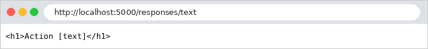

2. Controladores, acciones y enrutamiento
Este capítulo examina el camino que sigue una solicitud, desde el navegador hasta la acción que la procesa, y la respuesta que esa acción devuelve. Las vistas no se tratarán hasta el capítulo 4: aquí, las acciones devuelven texto o JSON directamente.
2.1. Ejemplo 01: la estructura de una aplicación Spring MVC
El primer ejemplo es la aplicación [Spring MVC] más pequeña posible. Además de los archivos [pom.xml] y [application.properties] presentados en la introducción, tiene dos archivos:
2.1.1. El punto de entrada: Example01Application.java
Recorramos este código:
- Línea 1: el paquete de la clase. Debe coincidir con el directorio del archivo ([src/main/java/example01]);
- Líneas 3–4: clases de otros paquetes utilizadas por este archivo. A diferencia de [C#], [Java] no tiene importaciones implícitas (excepto el paquete [java.lang], que contiene [String], [Integer]...): cada archivo importa explícitamente las clases que usa;
- Línea 9: [@SpringBootApplication] es una anotación. Una anotación de [Java] se escribe como [@Name], inmediatamente antes de lo que describe (una clase, un método, un parámetro...): agrega información que el framework lee al iniciar. Equivale a los atributos [[...]] de [C#]. [@SpringBootApplication] marca la clase de inicio de la aplicación y combina tres anotaciones: [@Configuration] (la clase puede declarar objetos administrados por [Spring]; véase el ejemplo 06), [@EnableAutoConfiguration] (autoconfiguración: [Spring Boot] configura automáticamente todo lo que admiten las bibliotecas disponibles, en este caso [Spring MVC], [Tomcat] y [Jackson]) y [@ComponentScan] (escaneo de componentes: [Spring] busca clases anotadas con [@Controller], [@Service]... en el paquete de esa clase, [example01], y en todos sus subpaquetes, como [example01.controllers]);
- Línea 13: el método [main], el punto de entrada de cualquier programa [Java]. Es [public] (visible desde cualquier lugar) y [static] (pertenece a la clase, no a un objeto de la clase). El parámetro [args] contiene los argumentos de la línea de comandos;
- línea 16: [SpringApplication.run] inicia [Spring]: lee la configuración (el archivo [application.properties], las variables de entorno, los argumentos de la línea de comandos...), crea los objetos de la aplicación y luego inicia el servidor web [Tomcat], que espera solicitudes hasta que se detiene la aplicación ([Ctrl-C]). [Example01Application.class] hace referencia a la propia clase: [Spring] lee de ella la anotación [@SpringBootApplication] y deduce el paquete que debe escanear.
No hay nada más que escribir: ninguna lista de controladores, ninguna declaración de rutas. El escaneo de componentes encuentra los controladores y la autoconfiguración configura todo lo demás.
2.1.2. El controlador: controllers/HomeController.java
- línea 1: la clase está en el paquete [example01.controllers], un subpaquete de [example01]: el escaneo de componentes la encuentra;
- línea 8: la anotación [@Controller] designa la clase como un controlador de [Spring MVC]. La clase no necesita heredar de una clase del framework (esto difiere de [ASP.NET Core MVC]); por convención, su nombre termina en [Controller]. [Spring] crea por sí mismo el objeto controlador al iniciar;
- línea 12: la anotación [@GetMapping("/")] asocia el método [index] con las solicitudes de tipo [GET /]. Un método asociado de esta manera con una ruta es una acción;
- línea 14: la anotación [@ResponseBody] especifica que el valor devuelto por la acción es el cuerpo de la respuesta enviada al navegador. Sin ella, [Spring MVC] trataría la cadena devuelta como el nombre de una vista que se debe mostrar (lo veremos en el ejemplo 04 y luego en el capítulo 4);
- Líneas 15–16: la acción devuelve una cadena. Por convención, los nombres de método en [Java] comienzan con minúscula.
2.1.3. Ejecución
En una ventana de terminal abierta en la carpeta [01-structure], escriba [../mvnw spring-boot:run] ([..\mvnw spring-boot:run] en [Windows]). Tras la compilación, [Spring Boot] muestra su banner, seguido de sus mensajes de inicio (reemplazamos la fecha, la hora, el número de proceso y el nombre del hilo por [...], y abreviamos las rutas):
Los mensajes de inicio indican la versión de [Java], el puerto de escucha (5000, establecido por [application.properties]) y la versión del servidor [Tomcat] integrado en la aplicación. También indican el perfil activo: [default]. Un perfil es un conjunto de configuraciones (desarrollo, producción, etc.); el caso de estudio usará uno. Solicitemos la URL [http://localhost:5000/] con un navegador:
y luego con [curl]. La opción [-i] también muestra los encabezados HTTP de la respuesta (aquí solo incluiremos algunos):
La primera línea de la respuesta es el código de estado, 200, sin el texto habitual [OK]: [Tomcat] no lo envía, porque el protocolo HTTP no lo exige. El navegador y [curl] aceptan solo el código.
[curl] recibió la cadena con el encabezado [Content-Type: text/plain]: texto sin formato. Sin embargo, el navegador la mostró como HTML (como se aprecia por la fuente, que es la misma que se usa en las páginas HTML). Esto se debe a que, para una cadena devuelta por una acción sin otras especificaciones, [Spring MVC] selecciona el tipo de respuesta según el encabezado [Accept] de la solicitud, mediante el cual el cliente especifica los tipos que acepta: es la negociación de contenido. [curl] envía [Accept: */*] (todos los tipos) y recibe [text/plain]; un navegador envía [Accept: text/html,...] y recibe [text/html]. Verifiquémoslo enviando con [curl] un encabezado de navegador (opción [-H]):
Esto difiere de [ASP.NET Core MVC], que siempre enviaba una cadena como texto sin formato. El ejemplo 02 mostrará cómo especificar el tipo de respuesta.
Con la primera solicitud, la consola muestra tres líneas más:
[DispatcherServlet] es el punto de entrada de [Spring MVC] (véase el diagrama de la introducción): [Tomcat] le reenvía todas las solicitudes, y es él quien selecciona la acción asignada a cada una. [Tomcat] solo lo prepara cuando recibe la primera solicitud.
2.2. Ejemplo 02: enrutamiento
El enrutamiento asocia una URL y un método HTTP (GET, POST...) con una acción. El ejemplo 02 tiene dos controladores:
La clase [Example02Application] es idéntica, salvo por el nombre, a la del ejemplo 01: esto es cierto para todos los ejemplos. El archivo [controllers/HomeController.java]:
- Línea 8: [@RestController] combina [@Controller] y [@ResponseBody]: todas las acciones de la clase devuelven directamente el cuerpo de la respuesta. Es la forma más común para un controlador que no genera vistas; la usaremos hasta el capítulo 4;
- línea 13: una anotación puede tener varios atributos, escritos como [name = value]. [value] es la ruta (cuando está solo, [value =] puede omitirse, como en el ejemplo 01); [produces] especifica el tipo de respuesta (el encabezado [Content-Type]), aquí [text/html], independientemente del encabezado de solicitud [Accept]. [MediaType.TEXT_HTML_VALUE] es una constante que equivale a ["text/html"]: un error tipográfico en su nombre causaría un error de compilación, lo que no ocurre con una cadena escrita a mano;
- Líneas 15–26: un bloque de texto ([text block], [Java] 15), delimitado por tres comillas. Puede abarcar varias líneas y contener comillas sin necesidad de escaparlas. Se elimina la sangría común a todas sus líneas (incluida la de las ["""] de cierre).
Por lo tanto, la acción [index] devuelve una página HTML que contiene enlaces a las acciones del otro controlador:

El archivo [controllers/FirstController.java]:
Comentemos este código:
- líneas 10–11: la anotación ***
[@RequestMapping("/first")]***, aplicada a la clase, establece el prefijo común a todas las rutas del controlador: sus acciones atienden las rutasURLque comienzan con***[/first]***; - Líneas 15–16: [@GetMapping("")]: la acción [index] procesa [GET /first]. La URL de la acción es la concatenación del prefijo del controlador y la ruta de la acción;
- líneas 21–22: la acción [action01] procesa [GET /first/action01];
- líneas 27–28: la misma ruta, pero para el método POST: [@PostMapping] reemplaza a [@GetMapping]. También existen [@PutMapping], [@DeleteMapping], [@PatchMapping]... (y [@RequestMapping], aplicada a un método, acepta todos los métodos HTTP). El nombre del método [Java] ([action01Post]) es arbitrario: para el enrutamiento solo importan las anotaciones. Además, dentro de la misma clase, dos métodos no pueden tener el mismo nombre con los mismos parámetros;
- Líneas 33–34: [{id}] es una variable de ruta: este segmento de la URL puede tomar varios valores. [\d+] es una expresión regular: el segmento debe estar formado por uno o más dígitos; de lo contrario, la ruta no coincide. En una cadena de [Java], el carácter [\] se escribe [\\]: de ahí [{id:\\d+}]. La anotación [@PathVariable] indica a [Spring MVC] que pase el valor del segmento al parámetro de la acción del mismo nombre, [id], después de convertirlo a [int]: para [/first/products/17], [id] es igual al número 17. Este es el enlace de datos ([data binding]), que el próximo capítulo examinará en detalle. Para que [Spring] conozca los nombres de los parámetros, el compilador debe conservarlos en las clases compiladas (opción [-parameters]): [spring-boot-starter-parent] se encarga de ello;
- línea 35: el operador [+] concatena una cadena y un número;
- líneas 39–41: dos variables de ruta se pasan como dos parámetros a la acción. El método [formatted] reemplaza cada aparición de [%d] en el texto con un entero, en el orden de los argumentos;
- líneas 45–47: [{*path}] es una variable “comodín” ([catch-all]): acepta cualquier final de URL, incluido [/]. Su valor comienza con [/].
Estos son los resultados de algunas solicitudes:
Para enviar una solicitud POST, use la opción [-X POST] de [curl]:
Un método HTTP que ninguna acción atiende para esta ruta produce un error 405 ([Method Not Allowed]). El encabezado [Allow] enumera los métodos aceptados:
Por último, una URL que ninguna ruta atiende produce un error 404. Esto también ocurre con un identificador que no cumple la expresión regular [\d+]: ninguna ruta coincide con [/first/products/abc].
A diferencia de las de [ASP.NET Core], las respuestas de error de [Spring Boot] contienen la siguiente información: la fecha del error, el código de estado, su descripción, un mensaje y la ruta solicitada. El mensaje [No static resource] se explica así: cuando ninguna acción coincide con la URL, [Spring MVC] busca un archivo estático con ese nombre (una imagen, una hoja de estilos... almacenada en la carpeta [src/main/resources/static] de la aplicación); como no encuentra ninguno, informa un error 404. [Spring Boot] genera entonces la respuesta de error, y vuelve a intervenir la negociación de contenido: [curl] recibe JSON y un navegador recibe una página HTML, la “Whitelabel Error Page” (una página de error “sin marca”):

El capítulo 7 mostrará cómo reemplazar esta página por una página de error específica de la aplicación.
2.3. Ejemplo 03: respuestas de las acciones
Lo que devuelve una acción determina la respuesta HTTP. El ejemplo 03 repasa los casos principales. El archivo [controllers/ResponsesController.java]:
Analicemos este código:
- líneas 22–25: una cadena, marcada como texto sin formato por el atributo [produces] (véase el ejemplo 02): el navegador la muestra tal cual, incluidas las etiquetas;
- líneas 28–31: la misma cadena, declarada como HTML: el navegador la interpreta;
- líneas 34–35: un record ([Java] 16): una clase de datos, declarada en una sola línea. El compilador crea un campo privado de solo lectura para cada componente ([lastName], [firstName], [age]), un constructor que los inicializa, un método de acceso para cada uno ([lastName()], [firstName()], [age()]) y métodos de utilidad ([equals], [hashCode], [toString]). El record se declara aquí dentro del controlador: es una clase anidada, cuyo nombre completo es [ResponsesController.Person];
- líneas 38–41: un objeto se serializa a JSON, con el encabezado [Content-Type: application/json]. La conversión la realiza la biblioteca [Jackson], incluida en el starter [spring-boot-starter-webmvc]: los nombres de las propiedades JSON corresponden a los componentes del record;
- líneas 44–47: una lista se serializa como un arreglo JSON. [List.of(...)] crea una lista de solo lectura. [List<String>] es un tipo genérico: una lista cuyos elementos son cadenas;
- líneas 51–54: cuando la acción necesita elegir el código de estado, devuelve un [ResponseEntity<T>]: un objeto que describe la respuesta completa (código, encabezados, cuerpo de tipo [T]). Se crea mediante métodos estáticos de la clase [ResponseEntity], que se invocan encadenados: [status(HttpStatus.CREATED)] establece el código 201 ([Created]), [body(...)] establece el contenido, que se serializará en JSON. [Map.of("message", "resource created")] crea un diccionario no modificable (un [Map]) con una sola clave, que [Jackson] serializa como el objeto JSON;
- líneas 57–60: [noContent()] devuelve una respuesta 204 ([No Content]): “sin contenido”. [build()] devuelve una respuesta sin cuerpo, lo que da como resultado el tipo [ResponseEntity<Void>];
- líneas 63–70: una acción asíncrona. Devuelve un [CompletableFuture<T>], un resultado “pendiente” (el equivalente de una tarea [Task<T>] de [C#] o de una promesa de [JavaScript]); [Spring MVC] libera de inmediato el hilo de [Tomcat] que procesaba la solicitud y envía la respuesta solo cuando el resultado está disponible. [supplyAsync(function, executor)] calcula el resultado mediante la función, que aquí se ejecuta tras una espera de 500 ms. La función se escribe como una lambda: [() -> expression] es una función sin parámetros que devuelve el valor de la expresión. [Duration.between] mide el tiempo transcurrido entre dos instantes;
- líneas 73–76: un error previsto por el programa: un [ResponseEntity] con código 404, que contiene JSON. La clase [ResponseEntity] también tiene atajos: [ok(...)] (200), [badRequest()] (400), [notFound()] (404)...;
- Líneas 79–82: un error inesperado: la acción lanza una excepción que no maneja. [Spring Boot] responde entonces con un error 500 ([Internal Server Error]).
Respuestas recibidas:
Para la excepción, la respuesta de error de [Spring Boot] (véase el ejemplo 02) contiene el mensaje de la excepción pero no la pila de llamadas, lo cual está prohibido por el archivo [application.properties] (véase la introducción). El propio mensaje aparece allí solo porque las herramientas de desarrollo ([Spring Boot DevTools]) están activas: en producción, sin ellas, la respuesta sería:
De hecho, el mensaje de una excepción puede dar información a un atacante. Los detalles del error se escriben en la consola del servidor (aquí reproducimos solo el comienzo):
En un navegador, se aprecia la diferencia entre [text/plain] y [text/html] :


2.4. Ejemplo 04: redirecciones
Una acción puede responder con una redirección: un código de estado 301 o 302 y un encabezado [Location] que indica al navegador qué URL solicitar a continuación. El navegador la solicita de inmediato, sin intervención del usuario. Las redirecciones son omnipresentes en una aplicación web: después de enviar correctamente un formulario, después de iniciar sesión, después de cambiar el idioma...
El archivo [controllers/RedirectsController.java]:
Comentemos este código:
- línea 15: la clase está anotada como [@Controller], no como [@RestController]. Por lo tanto, una cadena devuelta por una acción es, salvo con [@ResponseBody], el nombre de una vista; y un nombre de vista que comienza con [redirect:] es un nombre especial que desencadena una redirección;
- Líneas 19–22: una redirección permanente (código de estado 301, [Moved Permanently]): la página se ha movido de forma permanente a una nueva dirección. Los navegadores y los motores de búsqueda pueden guardar la nueva dirección. Se crea mediante un [ResponseEntity] (véase el ejemplo 03): [location(...)] establece el encabezado [Location], cuyo valor es un objeto [URI] (una dirección);
- líneas 24–28: la anotación [@ResponseBody] es necesaria aquí: la cadena devuelta es el cuerpo de la respuesta, no el nombre de una vista;
- líneas 31–34: ["redirect:" + url] genera una redirección temporal (código de estado 302, [Found]), en este caso hacia una dirección calculada;
- líneas 38–42: una redirección a una dirección de plantilla: en [redirect:/page/{name}], [Spring MVC] reemplaza [{name}] con el valor del atributo [name], que se almacena en el objeto [RedirectAttributes]. Este objeto lo proporciona [Spring MVC] a la acción que lo solicita como parámetro. La ventaja respecto a la forma anterior: el valor se codifica correctamente para una URL (véase más adelante). El objeto [RedirectAttributes] también se usará, en el capítulo 4, para enviar mensajes a la página siguiente;
- líneas 51–54: se puede redirigir a otro sitio.
[curl] muestra la redirección sin seguirla realmente:
Con la opción [-L], [curl] sigue la redirección, tal como lo haría un navegador. Entonces vemos las dos respuestas sucesivas:
Ambas acciones producen la misma redirección. Observe que esta vez la dirección del encabezado [Location] es absoluta ([http://localhost:5000/...]), mientras que la acción devolvió una dirección relativa ([/page/contact]): una redirección con [redirect:] pasa por el servidor [Tomcat], que completa la dirección porque [Spring Boot] lo configura así de forma predeterminada (propiedad [server.tomcat.use-relative-redirects], que vale [false]). En cambio, la redirección de la acción [oldPage], generada por un [ResponseEntity], conserva la dirección tal cual. Ambas formas son correctas.
La diferencia entre las dos acciones se hace evidente cuando el destino contiene un carácter que debe codificarse en una URL, como un espacio (codificado como [%20]):
La variable de ruta [destination] recibió el valor decodificado, [my contact]. La concatenación de la acción [go] la copia exactamente tal cual: el encabezado [Location] contiene un espacio sin codificar, lo que lo convierte en una dirección no válida (una URL no contiene espacios). Algunos clientes lo corrigen por su cuenta ([curl -L], por ejemplo, sigue la redirección y llega a la página [my contact]), mientras que otros no: es una trampa, pues el error pasa inadvertido durante las pruebas. La URL de plantilla de la acción [toTemplate], en cambio, se codifica correctamente: esta es la forma adecuada de insertar el valor de una variable en una redirección. En el navegador solo se ve la página final; la barra de direcciones muestra la nueva URL:

2.5. Ejemplo 05: los objetos de solicitud y de respuesta
[Spring MVC] se basa en la API [Servlet] y en [Jakarta EE] (antes [Java EE]), el estándar de servidores web [Java]: [Tomcat] es un contenedor de servlets y [DispatcherServlet] es un servlet, es decir, un objeto al que el servidor delega las solicitudes. En este estándar, cada solicitud se representa mediante un objeto [HttpServletRequest] y la respuesta en construcción mediante un objeto [HttpServletResponse]. Una acción puede recibir cualquiera de los dos: basta con solicitarlos como parámetros. A veces es necesario y lo haremos en el caso de estudio (por ejemplo, para leer o establecer una cookie), pero hay que saber lo que se hace.
El archivo [controllers/HttpController.java]:
Comentemos este código:
- líneas 12–13: las clases de la API [Servlet] están en el paquete [jakarta.servlet...];
- línea 22: la acción declara un parámetro de tipo [HttpServletRequest]: [Spring MVC] le pasa la solicitud actual. Así es como [Spring MVC] proporciona a una acción lo que necesita: según el tipo de sus parámetros o según sus anotaciones ([@PathVariable]...);
- línea 24: un diccionario mutable. [Map] es una interfaz (un tipo que describe operaciones sin implementarlas; volveremos a ello en el ejemplo 06), [LinkedHashMap] es una de sus implementaciones; [<>] reutiliza los tipos genéricos de la declaración ([<String, String>]);
- líneas 25–29: la solicitud: el método HTTP ([getMethod]), la ruta ([getRequestURI]), los parámetros de la URL ([getQueryString], sin el [?], o [null] si no hay ninguno), un encabezado ([getHeader]) y la dirección IP del cliente ([getRemoteAddr]);
- líneas 34–38: la acción agrega un encabezado a la respuesta y luego devuelve normalmente su valor, que [Spring MVC] envía. Es el uso más común del objeto de respuesta;
- líneas 41–46: la acción escribe ella misma la respuesta (código de estado, tipo y luego cuerpo) mediante el objeto [PrintWriter] devuelto por [getWriter()]. No devuelve nada ([void]): [Spring MVC] considera entonces que la acción ya escribió la respuesta. La cláusula [throws IOException] declara que el método puede lanzar una [IOException] (un error de escritura): en [Java], un método debe declarar de esta manera las excepciones llamadas verificadas que no maneja;
- Líneas 49–56: el error que se debe evitar: escribir parte de la respuesta y luego devolver un resultado. Una vez que los primeros bytes del cuerpo se han enviado al navegador (aquí, forzado por [flushBuffer]), el código de estado y los encabezados, que se envían antes del cuerpo, ya no pueden modificarse.
Las respuestas obtenidas:
(la opción [-A] de [curl] establece el encabezado [User-Agent], que identifica al navegador)
En la última solicitud, el cliente recibe un código de estado 200 y el comienzo de la respuesta, en lugar del 404 solicitado. Y, a diferencia de [ASP.NET Core], el servidor no informa nada: la consola permanece en silencio y el error puede pasar inadvertido. La respuesta revela un segundo defecto: no tiene encabezado [Content-Type]. La acción no estableció el tipo de respuesta antes de escribir en ella: el objeto de respuesta codifica entonces el texto según el juego de caracteres predeterminado del estándar [Servlet], [ISO-8859-1], mientras que la terminal espera UTF-8, de modo que cualquier carácter acentuado se reemplazaría por [�] (este texto en inglés no contiene ninguno). El navegador, por su parte, no recibe ninguna indicación de juego de caracteres; adivina uno, en este caso con éxito:
Más adelante en el documento, las acciones casi siempre devolverán un valor (un objeto, un [ResponseEntity], un nombre de vista) y dejarán que [Spring MVC] escriba la respuesta. [HttpServletRequest] y [HttpServletResponse] solo se usarán para leer la solicitud y establecer cookies.
2.6. Ejemplo 06: servicios e inyección de dependencias
Los controladores no deben contener lógica de aplicación; la delegan en servicios. Un servicio es un objeto ordinario que [Spring] crea y proporciona a las clases que lo necesitan: esto es la inyección de dependencias. Los objetos que [Spring] crea y administra de esta manera se llaman beans (de la palabra inglesa para “granos”; los controladores también son beans). El conjunto de beans de una aplicación forma el contexto de [Spring], o contenedor de beans. El ejemplo 06 divide una pequeña aplicación en dos partes: productos y clientes:
2.6.1. El producto
Un record (véase el ejemplo 03), esta vez en su propio archivo. El tipo [BigDecimal] representa importes sin errores de redondeo, algo que el tipo [double] no garantiza.
2.6.2. El contrato del servicio: ProductsService
- Línea 7: una interfaz describe lo que el servicio puede hacer, sin especificar cómo. Las clases que usan el servicio solo conocerán esta interfaz. A diferencia de la convención de [C#] ([IProductsService]), el nombre de una interfaz [Java] no comienza con [I];
- línea 9: [List<Product>]: una lista de productos;
- línea 11: [Optional<Product>]: un producto, o nada si ningún producto tiene este identificador. Un [Optional] es una caja, vacía o con un valor: obliga a quien lo llama a considerar el caso en que no hay producto, mientras que un [null] podría pasarse por alto (y causar una [NullPointerException]).
2.6.3. La implementación: InMemoryProductsService
- línea 8: la clase implementa la interfaz ([implements]): debe proporcionar todos sus métodos;
- líneas 10–13: los datos, aquí en memoria, en una lista de solo lectura. Los importes se construyen a partir de cadenas: [new BigDecimal("1.5")] es exactamente 1.5;
- Líneas 15 y 20: la anotación [@Override] indica que el método pertenece a una interfaz (o a una clase padre): el compilador verifica que efectivamente exista;
- línea 22: un iterador ([stream]) recorre la lista: [filter] conserva solo los productos que cumplen la condición, escrita como una lambda de un solo parámetro (véase el ejemplo 03), [p]; [findFirst] devuelve el primer producto restante en un [Optional], que está vacío si no hay ninguno. [p.id()] es el método de acceso al componente [id] del record.
La clase no tiene anotaciones: es una clase [Java] ordinaria, que no sabe nada de [Spring]. Veremos más adelante cómo se convierte en un bean.
2.6.4. El controlador ProductsController
- Líneas 17–22: inyección de dependencias. El controlador declara en su constructor que necesita un [ProductsService]; [Spring], que crea el controlador, le proporciona un bean de ese tipo (véase más adelante). El controlador nunca invoca [new InMemoryProductsService()]: ni siquiera conoce esta clase, solo la interfaz. Podríamos reemplazar la implementación (por una versión que lea una base de datos, o por una versión de prueba) sin modificar el controlador. El campo se declara como
***[final]***: solo puede asignarse una vez, en el constructor; - líneas 24–27: la acción delega en el servicio. La lista se serializa como JSON;
- líneas 29–35: [{id:\\d+}] acepta solo números; un producto inexistente devuelve una respuesta 404. El [Optional] devuelto por el servicio se procesa en dos pasos: [map] transforma su contenido, si lo hay, en una respuesta 200; [orElseGet] proporciona la respuesta que se usará si el [Optional] está vacío: en este caso, una respuesta 404 acompañada de un mensaje. [ResponseEntity::ok] es una referencia a método: una forma más corta de escribir la lambda [p -> ResponseEntity.ok(p)]. El tipo [ResponseEntity<?>] ([?]: cualquier tipo de cuerpo) permite que la acción devuelva un producto o un diccionario; la notación [.<ResponseEntity<?>>map(...)] indica este tipo al compilador, que no puede inferirlo por sí solo.
2.6.5. El controlador ClientsController
- líneas 19–23: [ClientsController] recibe el mismo servicio que [ProductsController]. La clase tiene un solo constructor: [Spring] lo usa para la inyección sin necesidad de más especificaciones. Esta es la forma de inyección recomendada y la que se usa en todo el documento;
- líneas 26–27: un record anidado que describe la respuesta JSON;
- línea 33: el cálculo del total. [map] convierte el flujo de productos en un flujo de precios ([Product::price] es una referencia al método de acceso [price()] del record), luego [reduce] los acumula, partiendo de cero ([BigDecimal.ZERO]) y sumándolos de dos en dos ([BigDecimal::add]).
2.6.6. Declaración de beans
[Spring] solo puede proporcionar un servicio si lo conoce: cada servicio debe declararse como un bean. Los controladores se declaran mediante su anotación [@RestController], que se detecta durante el escaneo de componentes (véase el ejemplo 01). En cambio, la clase [InMemoryProductsService] no tiene anotación: se declara en el archivo [products/ProductsConfig.java]:
- línea 9: la anotación [@Configuration] designa la clase como una clase de configuración; también se encuentra durante el escaneo de componentes y [Spring] ejecuta al iniciar sus métodos anotados con [@Bean]. Agrupa las declaraciones de la sección “productos” de la aplicación;
- líneas 14–17: un método anotado con [@Bean] crea un bean. Significa: “cuando una clase solicite un [ProductsService], proporciónale el objeto devuelto por este método”. El nombre del método ([productsService]) se convierte en el nombre del bean.
Hay otra forma, más corta, de declarar un bean: anotar la propia clase con [@Service] (o [@Component], del cual [@Service], [@Controller] y [@Repository] son variantes), que el escaneo de componentes encuentra igual que encuentra los controladores. Colocar [@Service] antes de la clase [InMemoryProductsService] haría innecesario el archivo [ProductsConfig.java] . El método [@Bean] es útil cuando la clase no puede llevar una anotación (una clase de una biblioteca, por ejemplo) o cuando crear el objeto requiere código. Ambas formas se usarán más adelante en este documento.
De forma predeterminada, un bean es un singleton: [Spring] crea una única instancia al iniciar y la proporciona a todas las clases que la soliciten durante toda la vida de la aplicación. [ProductsController] y [ClientsController] reciben así el mismo objeto [InMemoryProductsService]. Existen otros ámbitos: [prototype] (una nueva instancia en cada solicitud al bean), [request] (una instancia por solicitud HTTP), [session]... El capítulo 6 retomará este tema.
Los controladores también son singletons: un único objeto [ProductsController] atiende todas las solicitudes, potencialmente de forma simultánea, en varios hilos. Esta es una diferencia clave con [ASP.NET Core MVC], que crea un nuevo objeto controlador para cada solicitud. Por lo tanto, un controlador de [Spring] no debe almacenar en sus campos datos específicos de una solicitud: sus campos contienen solo los servicios inyectados, declarados como [final].
La clase [Example06Application] es igual que en los ejemplos anteriores: no hay nada que registrar allí; el escaneo de componentes encuentra los controladores y la clase de configuración en los subpaquetes [clients] y [products].
2.6.7. Ejecución
El caso de estudio está estructurado exactamente así: controladores ligeros que delegan en servicios inyectados, descritos mediante interfaces y declarados como beans.